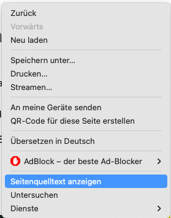
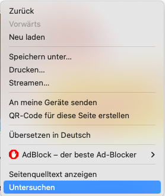
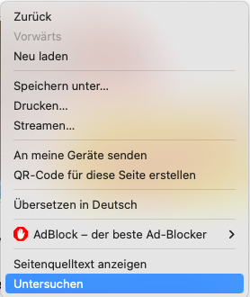

Ziel letzter Stunde: selbst schreiben
...
heute mal richtig
Wir bleiben in der Stadt Penich in Portugal und möchten unsere Seite erweitern.
Was spricht euch an?
Hier ein paar Bilder zur Inspiration.
Peniche (mit Libraries)
Peniche (crazy level)

 
